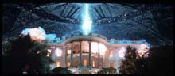

E&P Media Links - Search
Page: Editor & Publisher: search for newspapers, TV stations, radio
stations, cityguides, etc., all over the world
World
Newspapers
New York Times: 'all the news that's fit
to print' as they say... all but the top stories of the day at this site
require a free registration. BUT... if you replace the 'www' in any
NYTimes URL with the work 'partners' then you can see it without
registering!
E&P Media Links - Search
Page: Editor & Publisher: search for newspapers, TV stations, radio
stations, cityguides, etc., all over the world
World
Newspapers
New York Times: 'all the news that's fit
to print' as they say... all but the top stories of the day at this site
require a free registration. BUT... if you replace the 'www' in any
NYTimes URL with the work 'partners' then you can see it without
registering!
I Saw It On
TV: A Guide to Broadcast Programming Sources: contact info for the
networks, and info on how to contact or buy copies of their shows:
U.S. Networks: The Big Three
U.S. Networks: Public Broadcasting
U.S. Networks: The Others
Canadian Networks and Sources
Canadian TV
Canadian Pay TV
Canadian Specialty Services
Canadian Representatives of Foreign TV Companies
Canadian Publications
Commercials
Transcripts
Production Companies
Distributor Information
Made-for-TV Movies
International Programming
As Advertised on TV or Radio
TV Stations on the
Internet
U.S. Television Networks:
Links to web sites of TV networks in the U.S., including both broadcast
and cable.
Broadcasters
Worldwide
Non-U.S. Broadcast Networks
International Channel
Television
Scripts
MattyG's TV Theme Songs and
More...
Survivor: collection
of links
Ring of
Vintage TV list
90s Primetime TV
Schedules
80s Primetime TV
Schedules
70s Primetime TV Schedules
The bfi TV
100: "The bfi TV 100 is a list of all-time top British television
programmes. Thousands of votes have been cast by members of the TV
industry to choose their favourite programmes."

 Complete Law & Order
Database: comprehensive! includes: * Characters * Cast & Crew *
Episodes * Awards * Links * Discussion * Photos * Sound Clips * Trivia
David Cantwell's Law &
Order Site: good page, includes many links to other L & O sites
Petri Hawkins-Byrd: the official
site of the bailiff on JUDGE JUDY
Desiluweb.com's St.
Elsewhere site
Complete Law & Order
Database: comprehensive! includes: * Characters * Cast & Crew *
Episodes * Awards * Links * Discussion * Photos * Sound Clips * Trivia
David Cantwell's Law &
Order Site: good page, includes many links to other L & O sites
Petri Hawkins-Byrd: the official
site of the bailiff on JUDGE JUDY
Desiluweb.com's St.
Elsewhere site
Rotten Tomatoes: movie reviews

Movie Transcripts
galore!
Movie Scripts galore!
Movie Mistakes
 The Rocky
Horror Picture Show script, with every bit of witty repartee; also here
The Rocky
Horror Picture Show script, with every bit of witty repartee; also here
Voice of America
 Support public radio!
NPR Online: Silvia Poggioli, Nina
Totenberg, Daniel Schorr, and all the gang! Interested in any of the music you heard on
NPR? Or This American Life,
the radio essay program hosted by Ira Glass?
Support public radio!
NPR Online: Silvia Poggioli, Nina
Totenberg, Daniel Schorr, and all the gang! Interested in any of the music you heard on
NPR? Or This American Life,
the radio essay program hosted by Ira Glass?
 STOP Dr. LAURA: find out why
and how
Rearrange
Dr. Laura's Face: no kidding! very cool. Dr Laura Site of the Year
2000
Dr. Laura's Agenda
Dr. Laura's
Abuse of Power
Open Letter to
Dr. Laura: Time to Set the Record Straight
UNOFFICIAL SOURCES:
Talk Radio's #1 Bully
Anarchist Librarians
Web - Dr. Laura Naked: "This page is dedicated to notable hypocrite
Dr. Laura, who is singlehandedly helping librarians re-discover why
principles such as intellectual freedom for ALL ages is the bedrock on
which our profession rests. ... Dr Laura Site of the Year 1999
DARTH
LAURA: enough negative Laura links to keep you busy for a long time
Loads
of Laura Links
Great Laura
Links
The Dr. Laura Parody
Pages
STOP Dr. LAURA: find out why
and how
Rearrange
Dr. Laura's Face: no kidding! very cool. Dr Laura Site of the Year
2000
Dr. Laura's Agenda
Dr. Laura's
Abuse of Power
Open Letter to
Dr. Laura: Time to Set the Record Straight
UNOFFICIAL SOURCES:
Talk Radio's #1 Bully
Anarchist Librarians
Web - Dr. Laura Naked: "This page is dedicated to notable hypocrite
Dr. Laura, who is singlehandedly helping librarians re-discover why
principles such as intellectual freedom for ALL ages is the bedrock on
which our profession rests. ... Dr Laura Site of the Year 1999
DARTH
LAURA: enough negative Laura links to keep you busy for a long time
Loads
of Laura Links
Great Laura
Links
The Dr. Laura Parody
Pages
Bremerton Sun
Eastside Journal
Gig Harbor/Peninsula Gateway
Issaquah Press
Northlake News
Peninsula (Olympic) Daily News
Port Townsend/Jefferson County Leader
Real Change Seattle Homeless Newspaper
San Juan Islands Journal
Seattle Chinese Post
Seattle Gay News
Seattle Metro Traffic
Seattle Times
Seattle Weekly
Skagit Valley Herald
Sound Web - People for Puget Sound
South (King) County Journal
South Sound Business Examiner
Snohomish County/Everett Herald
Snoqualmie Valley Record
Stanwood/Camano News
The Stranger
Tacoma News Tribune
Valley View Online
West Seattle Herald
Washington Traffic
Woodinville Weekly
The Abbotsford News (Abbotsford, B.C.)
Cascadia News Net
The Chilliwack Progress (Chilliwack, B.C.)
Corvallis Gazette-Times
Curry Coastal (Oregon)Pilot
Daily Astorian (Oregon)
Daily News (Longview, Kelso)
Idaho Falls (Idaho) Post Register
Idaho Press-Tribune
KING TV
Klamath Falls (Oregon) Herald and News
KSTW TV Northwest News
Lewiston (Idaho) Tribune
Lincoln City (Oregon) News Guard
Medford (Oregon) Mail Tribune
Moscow-Pullman Daily News
Pacific Northwest Earthquake Information
Roseburg (Oregon) News Review
Seattle Times
Skanner Online Newspaper
Spokane Spokesman-Review
Tacoma News Tribune Northwest News
Tri-City Herald
University of Washington Online Daily
Vancouver B.C. Province
Vancouver B.C. Sun
Vancouver/Clark County Columbian
The
Pacific Northwest Regional Newspaper and Periodical Index: "both a
subject index card file and an electronic database together containing
hundreds of thousands of citations from newspaper and periodical articles,
pamphlets, scrapbooks and selected books dealing with the Pacific
Northwest... The Regional Index online contains citations for articles
dealing with the Pacific Northwest published since January 1, 1997, in the
Seattle Weekly, Seattle Post-Intelligencer and The Daily of the University
of Washington, as well as for pamphlets and other selected materials
published both prior to and after January 1, 1997. Plans are in the works
to begin archiving the Regional Index card file online in 1999."
 Comments? Write me at RMIsaac@eskimo.com
Comments? Write me at RMIsaac@eskimo.com